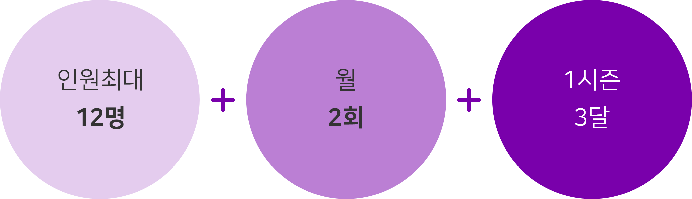

Q. 신청방법이 어떻게 되나요?
홈페이지 신청하기 링크의 구글 설문 참여시 신청이 되며
내부 심사 기준에 따라 참석 가부 여부가 결정됩니다.
Q. 신청 절차 및 과정이 궁금해요
'구글설문 신청하기'를 완료한 고객들을 대상으로 최대 1주일의
내부 심사 기간이 소요되며 이후 심층 면담을 통하여 PASS,
FAIL, WAIT 의 결과를 받게 되며 최종적으로 스터디원이 구성됩니다.
Q. 신청하면 모두 참석할 수 있는 것이 아닌가요?
네, 신청 자체로 모든 인원이 참석할 수는 없습니다.
스터디는 모임 목적과 주제 그리고 성향에 따라 만족도 차이가
큼에 따라 섬세한 심사 과정을 통하여 참석 결과가 달라질 수 있습니다.
Q. 모임은 어디서 진행되나요?
모임은 주로 강남, 종로, 합정에 위치한 오피스에서 공간을 대여하여
진행하도로고 도움드리고 있습니다. 시간 제한은 없으며, 간단한
다과 및 음료를 무료로 제공해드립니다.
Q. 진행방식이 어떻게 되나요?
동일하고 유사한 금융 고민을 갖고 있는 스터디원을 모집하여
총 12인이 1개의 커뮤니티를 구성하며 1개의 커뮤니티는 3개팀으로
나뉘어 스터디를 진행하게 됩니다.
모임은 월 2회, 3달을 1 시즌으로 구성하여 운영됩니다.

Q. 스터디는 어떻게 진행되나요?
스터디는 모임 2일전 자정까지 과제를 제출해야 참석할 수 있습니다.
스터디는 팀 발표형식과 토론형식으로 이뤄지며 모든 스터디는
총 2시30분의 시간 동안 이뤄집니다.
Q. 과제는 어떻게 진행되나요?
매주 과제 운영 방식은 스터디를 진행하면서 팀원내 협의를
통하여 결정하게 됩니다. 단, 과제는 해당 주의 스터디를
참석하기 위한 가장 중요한 요소로 미재출시 스터디 참석이
불가합니다. 과제는 팀과제로 마지막 모임때 최종 점수를 평가하게 됩니다.
Q. 스터디원이 선정이 되고 구성되는 기준은 어떻게 되나요?
스터디원 선정은 내부 심사 기준에 의해 결정되며,
최대한 공통된 고민과 관심이 있는 유사한 사람들끼리
모여 즐겁게 금융 공부할 수 있도록 노력하고 있습니다.
Q. 내부 심사 기준은 무엇인가요?
소득, 부채, 성향, 지역 등 다양한 조건을 비교 분석하여 본인과
가장 유사한 사람들과 함께 할 수 있도록 심사하고 있습니다.
스터디의 특성상 꾸준하고 성실하게 참여하시는 분에게
우선권을 부여하고 있습니다.
Q. 스터디를 친구(애인)과 함께 신청해도 되나요?
네, 함께 스터디를 진행하고 싶으신 분이 있으시면
스터디 팀 구성 전 말씀 부탁드립니다.
쌍방의 동의하에 함께 진행 할 수 있도록 도와드리고 있습니다.
Q. COVID-19 관련 운영 정책이 어떻게 되나요?
모든 모임은 질병관리청의 코로나 예방 수칙을 철저히 지키며
진행됩니다. 모임 장소에 체온기와 손소독제가 비치되어 있으며
모임 동안 반드시 마스크를 참석하고 진행되며 고열시 모임
참석이 불가합니다.
Q. COVID-19 확진자 혹은 밀첩접촉자 인 경우 어떻게 해야 하나요?
COVID-19 확진자 혹은 관련자(자가격리자)인 경우, 모임 참석이 불가
하며 기한에 따른 환불 조치를 하고 있습니다.
본인이 대상자인 경우 '자가격리통지서', '출입국증명서', '병원소견서'
등 관련 서류를 제출하여 증빙 부탁드립니다.
Q. 정부의 사회적 거리두기 단계별 가이드 라인은 어떻게 되나요?
티끌미끌은 기본적으로 20인 이하의 모임으로 구성되어 있으며
정부 지침이 이보다 소규모 인원의 모임을 요구하는 경우,
기한에 따른 환불 조치 혹은 비대면 운영 등 다앙한 방법으로
운영되고 있습니다. 상세한 추가 운영 방안에 대한 내용은
개별 안내 드리겠습니다.